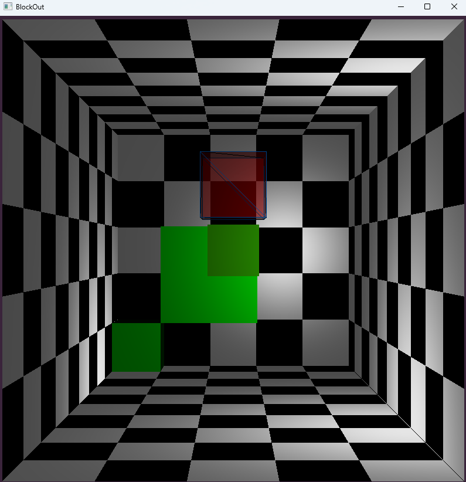
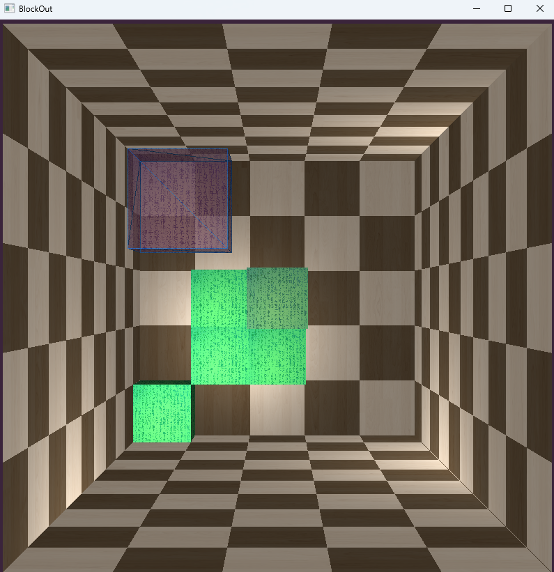

My name is Odin Aas, i have a bachelor in Programming at NTNU in Gjøvik. I have experience with many different languages, libraries and frameworks. I am an avid learner, i belive that you are never truly finished learning. I love exploring new technologies, figuring out how they work, and how to use them effectivley.
The first programming language i learned was C. We used this not only as a way into programming, but also a way into computers themselves. Using a low level language such as C let us really interact with a computer and its hardware. A little later in my studies we had to learn how to use OpenGL with C++.
This was quite the step up from anything we had done previously, now we had to create our own 3d engine. The exam, which was over the course of three days, we had to recreate a simplified version of a game called Blockout, which itself is a 3d version of tetris.
In the pictures above and below you can see the finished product, both textured and untextured. The code for this project specifically was written over the course of three days, although the undelying engine was written over the course of one semester. Everything is written in C++.
Most of the openGL code is written by me, but i did use some libraries to simplify certain out-of-scope aspects. I used TCLAP for command line arguments, GLFW for window management, glm for openGL-friendly math, and stb for image (texture) handling.